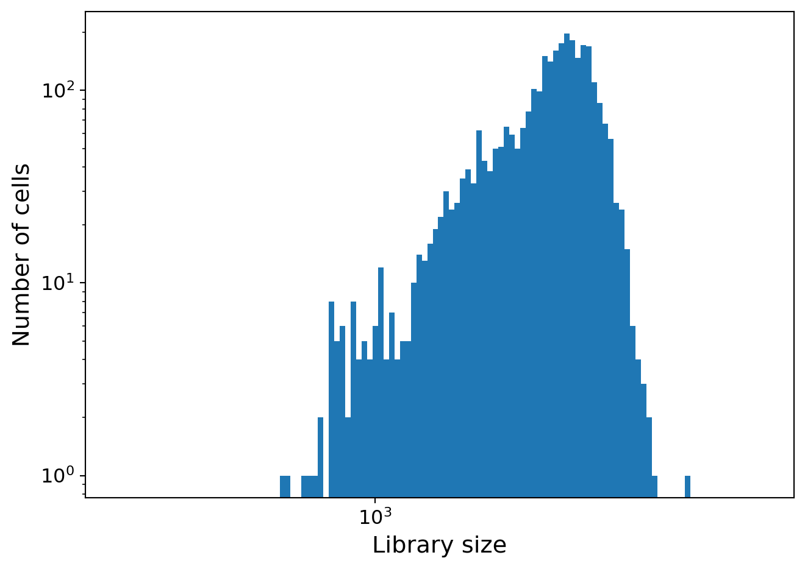
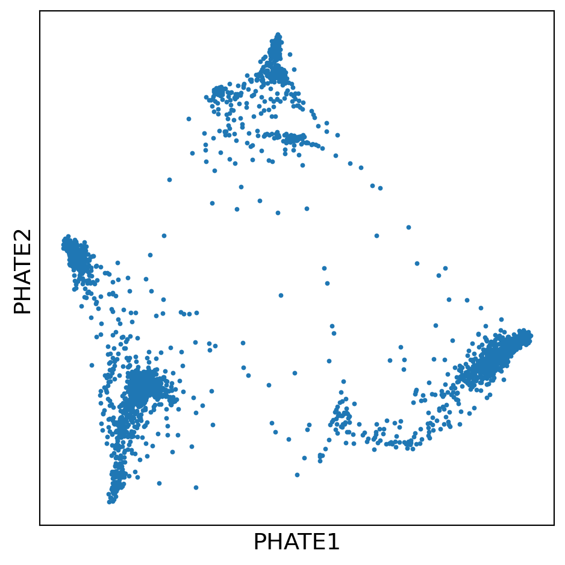
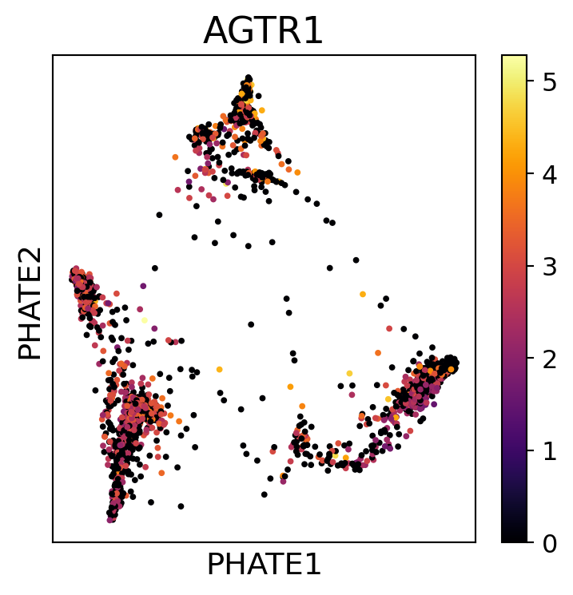
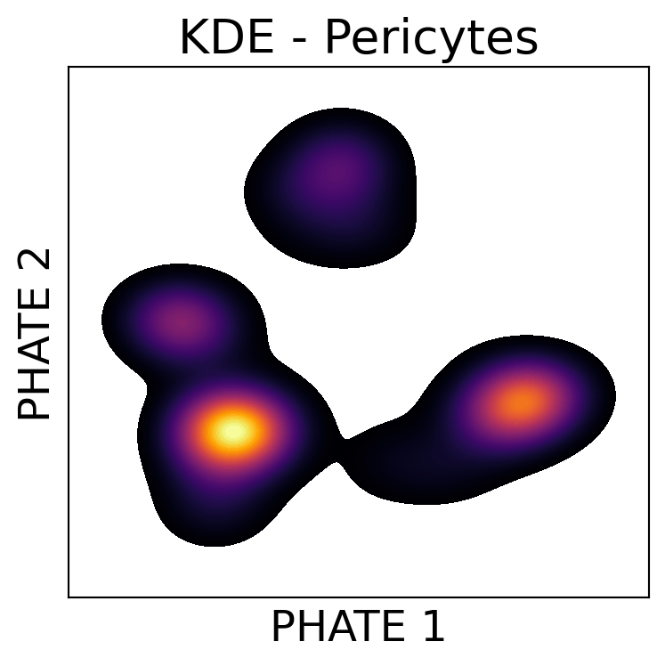
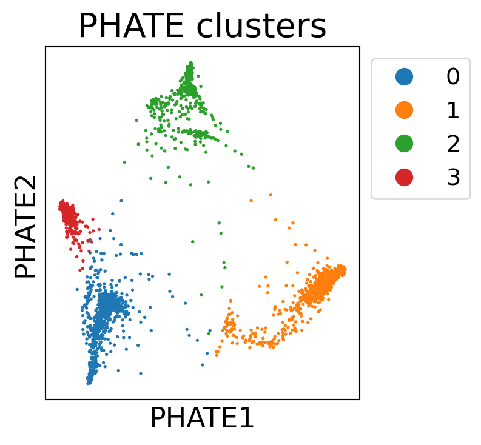
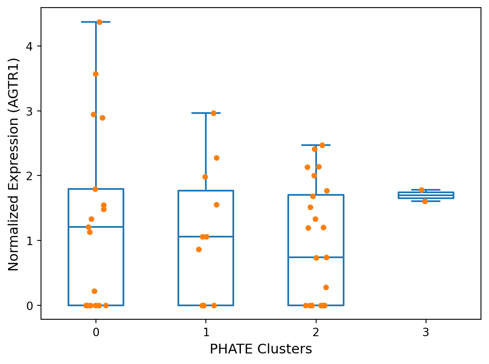
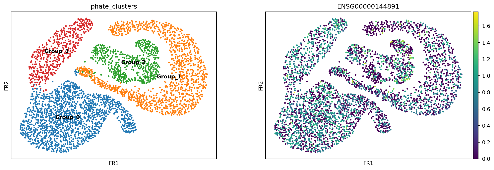
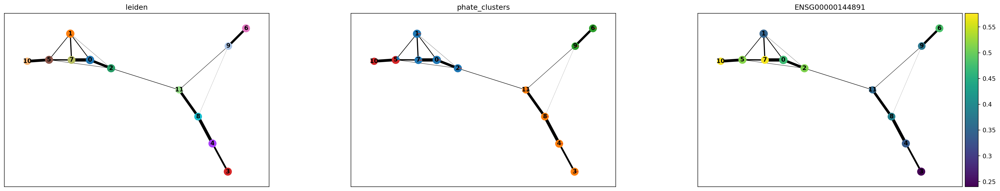
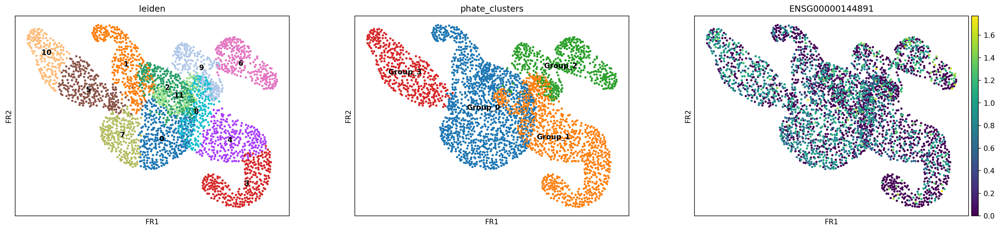
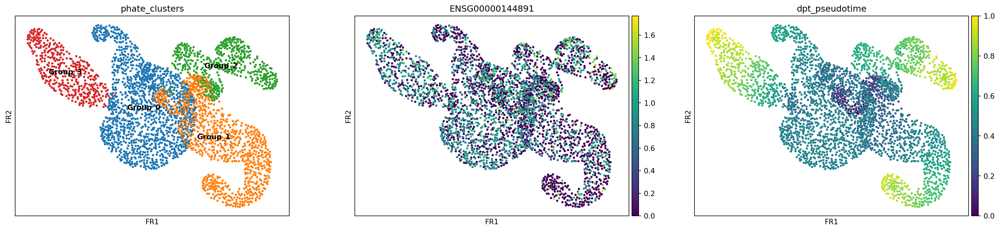

import numpy as np
import scanpy as sc
import pandas as pd
import polars as pl
import seaborn as sns
import matplotlib.pyplot as plt
from scipy.stats import f_oneway
import phate, scprep, session_info
from statsmodels.stats.multicomp import MultiComparisonDimensional reduction with PHATE: Pericytes
1 Import libraries
%matplotlib inline
sc.settings.verbosity = 32 Load data
adata = sc.read_h5ad("../_m/peri.hlca_core.dataset.h5ad")
adataAnnData object with n_obs × n_vars = 3032 × 28024
obs: 'suspension_type', 'donor_id', 'is_primary_data', 'assay_ontology_term_id', 'cell_type_ontology_term_id', 'development_stage_ontology_term_id', 'disease_ontology_term_id', 'self_reported_ethnicity_ontology_term_id', 'tissue_ontology_term_id', 'organism_ontology_term_id', 'sex_ontology_term_id', 'BMI', 'age_or_mean_of_age_range', 'age_range', 'anatomical_region_ccf_score', 'ann_coarse_for_GWAS_and_modeling', 'ann_finest_level', 'ann_level_1', 'ann_level_2', 'ann_level_3', 'ann_level_4', 'ann_level_5', 'cause_of_death', 'dataset', 'entropy_dataset_leiden_3', 'entropy_original_ann_level_1_leiden_3', 'entropy_original_ann_level_2_clean_leiden_3', 'entropy_original_ann_level_3_clean_leiden_3', 'entropy_subject_ID_leiden_3', 'fresh_or_frozen', 'leiden_1', 'leiden_2', 'leiden_3', 'leiden_4', 'leiden_5', 'log10_total_counts', 'lung_condition', 'mixed_ancestry', 'n_genes_detected', 'original_ann_highest_res', 'original_ann_level_1', 'original_ann_level_2', 'original_ann_level_3', 'original_ann_level_4', 'original_ann_level_5', 'original_ann_nonharmonized', 'reannotation_type', 'reference_genome', 'sample', 'scanvi_label', 'sequencing_platform', 'size_factors', 'smoking_status', 'study', 'subject_type', 'tissue_dissociation_protocol', 'tissue_level_2', 'tissue_level_3', 'tissue_sampling_method', 'tissue_type', 'cell_type', 'assay', 'disease', 'organism', 'sex', 'tissue', 'self_reported_ethnicity', 'development_stage', 'observation_joinid', 'subclusters', 'clusters', 'compartment', 'patient', 'label'
var: 'feature_is_filtered', 'feature_name', 'feature_reference', 'feature_biotype', 'feature_length'
uns: 'X_name', 'batch_condition', 'citation', 'default_embedding', 'schema_reference', 'schema_version', 'title'
obsm: 'X_scanvi_emb', 'X_umap'
obsp: 'connectivities', 'distances'hlca_counts = pd.DataFrame(adata.X.toarray(),
columns=[adata.var.feature_name],
index=adata.obs.index)
print(hlca_counts.shape)
hlca_counts.head(2)(3032, 28024)| feature_name | TSPAN6 | TNMD | DPM1 | SCYL3 | C1orf112 | FGR | CFH | FUCA2 | GCLC | NFYA | ... | LINC02456 | TRBV6-2 | RP1-221C16.8 | LBHD2 | RP11-124N19.4 | RP11-11M20.4 | LLNLR-245B6.1 | MGC4859 | RP11-107E5.4 | RP11-299P2.2 |
|---|---|---|---|---|---|---|---|---|---|---|---|---|---|---|---|---|---|---|---|---|---|
| GGGACCTAGGTCATCT_HD68 | 0.0 | 0.0 | 0.0 | 0.0 | 0.0 | 0.0 | 2.669188 | 0.0 | 0.0 | 0.000000 | ... | 0.0 | 0.0 | 0.0 | 0.0 | 0.0 | 0.0 | 0.0 | 0.0 | 0.0 | 0.0 |
| TCGGATAAGGTGAGCT_SC86 | 0.0 | 0.0 | 0.0 | 0.0 | 0.0 | 0.0 | 1.256804 | 0.0 | 0.0 | 0.814075 | ... | 0.0 | 0.0 | 0.0 | 0.0 | 0.0 | 0.0 | 0.0 | 0.0 | 0.0 | 0.0 |
2 rows × 28024 columns
scprep.plot.plot_library_size(hlca_counts)/users/jbenjami/.local/lib/python3.9/site-packages/scprep/plot/utils.py:104: UserWarning:
Matplotlib is currently using module://matplotlib_inline.backend_inline, which is a non-GUI backend, so cannot show the figure.

3 Preprocessing: Filtering, Normalizing, and Transforming
3.1 Filtering
This data, however, has already had very extensive filtering and QC. Based on the core model, there are no high mitochondria percentages and few outliers. So, we will skip the outlier step as this eliminates very few cells (< 1%).
hlca_counts = scprep.filter.filter_rare_genes(hlca_counts, min_cells=6)
hlca_counts.shape(3032, 14395)3.2 Normalization
hlca_counts = scprep.normalize.library_size_normalize(hlca_counts)
hlca_counts.head(2)| feature_name | TSPAN6 | DPM1 | SCYL3 | C1orf112 | FGR | CFH | FUCA2 | GCLC | NFYA | STPG1 | ... | RP11-295P9.13 | RP11-422P24.12 | CTD-3113P16.11 | RP11-605B16.1 | BISPR | CTC-490E21.14 | PRNCR1 | RP11-557N21.1 | RP11-11M20.4 | LLNLR-245B6.1 |
|---|---|---|---|---|---|---|---|---|---|---|---|---|---|---|---|---|---|---|---|---|---|
| GGGACCTAGGTCATCT_HD68 | 0.0 | 0.0 | 0.0 | 0.0 | 0.0 | 20.325068 | 0.0 | 0.0 | 0.000000 | 0.0 | ... | 0.0 | 0.0 | 0.0 | 0.0 | 0.0 | 0.0 | 0.0 | 0.0 | 0.0 | 0.0 |
| TCGGATAAGGTGAGCT_SC86 | 0.0 | 0.0 | 0.0 | 0.0 | 0.0 | 6.653818 | 0.0 | 0.0 | 4.309905 | 0.0 | ... | 0.0 | 0.0 | 0.0 | 0.0 | 0.0 | 0.0 | 0.0 | 0.0 | 0.0 | 0.0 |
2 rows × 14395 columns
3.3 Transformation
hlca_counts = scprep.transform.sqrt(hlca_counts)4 PHATE
phate_operator = phate.PHATE(n_jobs=-2, random_state=13)
Y_phate = phate_operator.fit_transform(hlca_counts)Calculating PHATE...
Running PHATE on 3032 observations and 14395 variables.
Calculating graph and diffusion operator...
Calculating PCA...
Calculated PCA in 9.93 seconds.
Calculating KNN search...
Calculated KNN search in 1.91 seconds.
Calculating affinities...
Calculated affinities in 0.59 seconds.
Calculated graph and diffusion operator in 12.60 seconds.
Calculating landmark operator...
Calculating SVD...
Calculated SVD in 0.54 seconds.
Calculating KMeans...
Calculated KMeans in 6.72 seconds.
Calculated landmark operator in 8.94 seconds.
Calculating optimal t...
Automatically selected t = 12
Calculated optimal t in 5.87 seconds.
Calculating diffusion potential...
Calculated diffusion potential in 2.08 seconds.
Calculating metric MDS...
Calculated metric MDS in 7.28 seconds.
Calculated PHATE in 36.78 seconds.scprep.plot.scatter2d(Y_phate, ticks=None, label_prefix="PHATE", figsize=(5,5),
filename="pericyte_phate_clustering.pdf", dpi=300)/users/jbenjami/.local/lib/python3.9/site-packages/scprep/plot/utils.py:104: UserWarning:
Matplotlib is currently using module://matplotlib_inline.backend_inline, which is a non-GUI backend, so cannot show the figure.

5 Plotting
5.1 Angiotensin II receptor 1 (AGTR1)
# Plotting mitochondrial expression
fig, ax = plt.subplots(1, figsize=(4,4))
scprep.plot.scatter2d(Y_phate, ax=ax, c=hlca_counts['AGTR1'],
title='AGTR1', ticks=False, label_prefix='PHATE',
filename="pericyte_phate_clustering.AGTR1.pdf", dpi=300)
fig.tight_layout()
5.2 KDE plot of pericytes
fig, ax = plt.subplots(1, figsize=(4,4))
kde_plot = sns.kdeplot(x=Y_phate[:, 0], y=Y_phate[:, 1], fill=True, ax=ax, zorder=0,
n_levels=100, cmap="inferno")
ax.set_xticks([]); ax.set_yticks([])
ax.set_xlabel('PHATE 1', fontsize=18); ax.set_ylabel('PHATE 2', fontsize=18)
ax.set_title('KDE - Pericytes', fontsize=20)
fig.tight_layout()
fig = kde_plot.get_figure()
fig.savefig("pericyte_phate_kde.pdf") 
5.3 Clustering data using PHATE
clusters = phate.cluster.kmeans(phate_operator, k=4)
scprep.plot.scatter2d(Y_phate, c=clusters, s=1,figsize=(4.3,4), ticks=None, label_prefix='PHATE',
legend_anchor=(1,1), fontsize=12, title='PHATE clusters',
filename="pericyte_phate_clustering.kmeans.pdf", dpi=300)
fig.tight_layout()/users/jbenjami/.local/lib/python3.9/site-packages/phate/cluster.py:57: FutureWarning:
k is deprecated. Please use n_clusters in future.
/users/jbenjami/.local/lib/python3.9/site-packages/scprep/plot/utils.py:104: UserWarning:
Matplotlib is currently using module://matplotlib_inline.backend_inline, which is a non-GUI backend, so cannot show the figure.

6 Comparison of PHATE clusters and AGTR1 expressoin
6.1 Subset data
gene_list = []
for item in hlca_counts.columns:
gene_list.append(str(item).replace("('", "").replace("',)", ""))
adata = adata[hlca_counts.index, adata.var.feature_name.isin(gene_list)]
adata.obsm["X_phate"] = Y_phate
adata.obs["phate_clusters"] = ["Group_"+str(clu) for clu in clusters]
adata/tmp/ipykernel_98817/2217928001.py:6: ImplicitModificationWarning:
Setting element `.obsm['X_phate']` of view, initializing view as actual.
AnnData object with n_obs × n_vars = 3032 × 14395
obs: 'suspension_type', 'donor_id', 'is_primary_data', 'assay_ontology_term_id', 'cell_type_ontology_term_id', 'development_stage_ontology_term_id', 'disease_ontology_term_id', 'self_reported_ethnicity_ontology_term_id', 'tissue_ontology_term_id', 'organism_ontology_term_id', 'sex_ontology_term_id', 'BMI', 'age_or_mean_of_age_range', 'age_range', 'anatomical_region_ccf_score', 'ann_coarse_for_GWAS_and_modeling', 'ann_finest_level', 'ann_level_1', 'ann_level_2', 'ann_level_3', 'ann_level_4', 'ann_level_5', 'cause_of_death', 'dataset', 'entropy_dataset_leiden_3', 'entropy_original_ann_level_1_leiden_3', 'entropy_original_ann_level_2_clean_leiden_3', 'entropy_original_ann_level_3_clean_leiden_3', 'entropy_subject_ID_leiden_3', 'fresh_or_frozen', 'leiden_1', 'leiden_2', 'leiden_3', 'leiden_4', 'leiden_5', 'log10_total_counts', 'lung_condition', 'mixed_ancestry', 'n_genes_detected', 'original_ann_highest_res', 'original_ann_level_1', 'original_ann_level_2', 'original_ann_level_3', 'original_ann_level_4', 'original_ann_level_5', 'original_ann_nonharmonized', 'reannotation_type', 'reference_genome', 'sample', 'scanvi_label', 'sequencing_platform', 'size_factors', 'smoking_status', 'study', 'subject_type', 'tissue_dissociation_protocol', 'tissue_level_2', 'tissue_level_3', 'tissue_sampling_method', 'tissue_type', 'cell_type', 'assay', 'disease', 'organism', 'sex', 'tissue', 'self_reported_ethnicity', 'development_stage', 'observation_joinid', 'subclusters', 'clusters', 'compartment', 'patient', 'label', 'phate_clusters'
var: 'feature_is_filtered', 'feature_name', 'feature_reference', 'feature_biotype', 'feature_length'
uns: 'X_name', 'batch_condition', 'citation', 'default_embedding', 'schema_reference', 'schema_version', 'title'
obsm: 'X_scanvi_emb', 'X_umap', 'X_phate'
obsp: 'connectivities', 'distances'6.2 Qualitative review
hlca_counts.loc[:, "PHATE"] = clusters
hlca_counts.loc[:, "patient"] = adata.obs["donor_id"]
df = pl.from_pandas(hlca_counts.loc[:, ["AGTR1", "PHATE", "patient"]])\
.rename({"('AGTR1',)": "AGTR1", "('PHATE',)": "PHATE",
"('patient',)": "patient"})
df.group_by(["PHATE", "patient"]).agg([pl.sum("AGTR1").name.suffix("_sum"),
pl.mean("AGTR1").name.suffix("_mean"),
pl.count("AGTR1").name.suffix("_count"),
pl.std("AGTR1").name.suffix("_std")])\
.sort("PHATE")
shape: (54, 6)
| PHATE | patient | AGTR1_sum | AGTR1_mean | AGTR1_count | AGTR1_std |
|---|---|---|---|---|---|
| i32 | cat | f64 | f64 | u32 | f64 |
| 0 | "homosapiens_No… | 2.610938 | 0.217578 | 12 | 0.753713 |
| 0 | "homosapiens_No… | 12.07757 | 1.207757 | 10 | 1.588502 |
| 0 | "homosapiens_No… | 0.0 | 0.0 | 5 | 0.0 |
| 0 | "homosapiens_No… | 4.371114 | 4.371114 | 1 | null |
| 0 | "homosapiens_No… | 3.586837 | 1.793418 | 2 | 0.189102 |
| 0 | "homosapiens_No… | 0.0 | 0.0 | 1 | null |
| 0 | "homosapiens_No… | 2.893894 | 2.893894 | 1 | null |
| 0 | "homosapiens_No… | 0.0 | 0.0 | 1 | null |
| 0 | "homosapiens_No… | 0.0 | 0.0 | 1 | null |
| 0 | "homosapiens_No… | 1740.951871 | 1.544767 | 1127 | 1.420807 |
| 0 | "homosapiens_No… | 9.064326 | 1.133041 | 8 | 2.135499 |
| 0 | "homosapiens_No… | 90.379624 | 1.481633 | 61 | 1.500975 |
| … | … | … | … | … | … |
| 2 | "homosapiens_No… | 183.989071 | 1.769126 | 104 | 1.673966 |
| 2 | "homosapiens_No… | 6.737752 | 1.684438 | 4 | 1.947152 |
| 2 | "homosapiens_No… | 66.092722 | 1.201686 | 55 | 1.646414 |
| 2 | "homosapiens_No… | 40.693629 | 2.14177 | 19 | 1.560494 |
| 2 | "homosapiens_No… | 31.99676 | 2.133117 | 15 | 1.404701 |
| 2 | "homosapiens_No… | 7.166006 | 1.194334 | 6 | 1.881717 |
| 2 | "homosapiens_No… | 6.016865 | 2.005622 | 3 | 1.768744 |
| 2 | "homosapiens_No… | 0.0 | 0.0 | 1 | null |
| 2 | "homosapiens_No… | 7.239764 | 2.413255 | 3 | 0.502074 |
| 2 | "homosapiens_No… | 0.0 | 0.0 | 1 | null |
| 3 | "homosapiens_No… | 692.243147 | 1.784132 | 388 | 1.440053 |
| 3 | "homosapiens_No… | 3.21802 | 1.60901 | 2 | 2.275484 |
dx = df.group_by(["PHATE", "patient"]).agg(pl.mean("AGTR1"))
ax = sns.boxplot(data=dx, x="PHATE", y="AGTR1", fill=False, width=0.5)
box_plot = sns.stripplot(data=dx, x="PHATE", y="AGTR1", ax=ax)
ax.set_xlabel('PHATE Clusters', fontsize=12);
ax.set_ylabel('Normalized Expression (AGTR1)', fontsize=12)
fig.tight_layout()
fig = box_plot.get_figure()
fig.savefig("pericyte_phate.boxplot_AGTR1.pdf") 
6.3 Statistical comparison
c0 = dx.filter(pl.col("PHATE") == 0).to_pandas().AGTR1.values
c1 = dx.filter(pl.col("PHATE") == 1).to_pandas().AGTR1.values
c2 = dx.filter(pl.col("PHATE") == 2).to_pandas().AGTR1.values
c3 = dx.filter(pl.col("PHATE") == 3).to_pandas().AGTR1.values
f_oneway(c0, c1, c2, c3)F_onewayResult(statistic=0.6774824662902309, pvalue=0.5699369537140733)model = MultiComparison(dx.to_pandas().AGTR1, dx.to_pandas().PHATE)
res_mod = model.tukeyhsd()
print(res_mod)Multiple Comparison of Means - Tukey HSD, FWER=0.05
===================================================
group1 group2 meandiff p-adj lower upper reject
---------------------------------------------------
0 1 -0.2537 0.9349 -1.3985 0.891 False
0 2 -0.4221 0.6321 -1.3599 0.5157 False
0 3 0.3735 0.9695 -1.838 2.585 False
1 2 -0.1684 0.9756 -1.2455 0.9088 False
1 3 0.6273 0.8833 -1.6468 2.9014 False
2 3 0.7956 0.7664 -1.3817 2.9729 False
---------------------------------------------------7 Trajectory inference
7.1 Normalize based counts
sc.pp.normalize_total(adata)
sc.pp.log1p(adata)
adata.raw = adatanormalizing counts per cell
finished (0:00:00)adata.var[adata.var.feature_name.isin(["AGTR1"])]| feature_is_filtered | feature_name | feature_reference | feature_biotype | feature_length | |
|---|---|---|---|---|---|
| ENSG00000144891 | False | AGTR1 | NCBITaxon:9606 | gene | 3478 |
7.2 Processing for PAGA
sc.pp.neighbors(adata, n_neighbors=50, use_rep="X_phate", random_state=13)
sc.tl.draw_graph(adata, random_state=13)
sc.pl.draw_graph(adata, color=["phate_clusters", "ENSG00000144891"],
legend_loc="on data", save=".pericyte_phate.pdf")computing neighbors
finished: added to `.uns['neighbors']`
`.obsp['distances']`, distances for each pair of neighbors
`.obsp['connectivities']`, weighted adjacency matrix (0:00:15)
drawing single-cell graph using layout 'fa'
WARNING: Package 'fa2' is not installed, falling back to layout 'fr'.To use the faster and better ForceAtlas2 layout, install package 'fa2' (`pip install fa2`).
finished: added
'X_draw_graph_fr', graph_drawing coordinates (adata.obsm) (0:00:23)
WARNING: You are using a low resolution (dpi<150) for saving figures.
Consider running `set_figure_params(dpi_save=...)`, which will adjust `matplotlib.rcParams['savefig.dpi']`
WARNING: saving figure to file figures/draw_graph_fr.pericyte_phate.pdf/users/jbenjami/.local/lib/python3.9/site-packages/scanpy/plotting/_tools/scatterplots.py:394: UserWarning:
No data for colormapping provided via 'c'. Parameters 'cmap' will be ignored

7.3 Clustering and PAGA
sc.tl.leiden(adata, resolution=0.5, random_state=13)
sc.tl.paga(adata, groups="leiden")
sc.pl.paga(adata, color=["leiden", "phate_clusters", "ENSG00000144891"],
save=".pericyte_phate.leiden.pdf")running Leiden clustering
finished: found 12 clusters and added
'leiden', the cluster labels (adata.obs, categorical) (0:00:00)
running PAGA
finished: added
'paga/connectivities', connectivities adjacency (adata.uns)
'paga/connectivities_tree', connectivities subtree (adata.uns) (0:00:00)
--> added 'pos', the PAGA positions (adata.uns['paga'])
WARNING: saving figure to file figures/paga.pericyte_phate.leiden.pdf
7.4 PAGA embedding
sc.tl.draw_graph(adata, init_pos="paga")
sc.pl.draw_graph(adata, color=["leiden", "phate_clusters", "ENSG00000144891"],
legend_loc="on data", save=".pericyte_phate.paga_embedding.pdf")drawing single-cell graph using layout 'fa'
WARNING: Package 'fa2' is not installed, falling back to layout 'fr'.To use the faster and better ForceAtlas2 layout, install package 'fa2' (`pip install fa2`).
finished: added
'X_draw_graph_fr', graph_drawing coordinates (adata.obsm) (0:00:10)
WARNING: saving figure to file figures/draw_graph_fr.pericyte_phate.paga_embedding.pdf/users/jbenjami/.local/lib/python3.9/site-packages/scanpy/plotting/_tools/scatterplots.py:394: UserWarning:
No data for colormapping provided via 'c'. Parameters 'cmap' will be ignored
/users/jbenjami/.local/lib/python3.9/site-packages/scanpy/plotting/_tools/scatterplots.py:394: UserWarning:
No data for colormapping provided via 'c'. Parameters 'cmap' will be ignored

8 Pseudotime visualization
8.1 Choose a root cell for diffusion pseudotime
adata.uns["iroot"] = np.flatnonzero(adata.obs["leiden"] == '11')[0]8.2 Compute diffusion pseudotime
sc.tl.dpt(adata)
sc.pl.draw_graph(adata, color=["phate_clusters", "ENSG00000144891", "dpt_pseudotime"],
legend_loc="on data", save=".pericytes_phate.diff_pseudotime.pdf")WARNING: Trying to run `tl.dpt` without prior call of `tl.diffmap`. Falling back to `tl.diffmap` with default parameters.
computing Diffusion Maps using n_comps=15(=n_dcs)
computing transitions
finished (0:00:00)
eigenvalues of transition matrix
[1. 0.99956065 0.99860865 0.9981825 0.9964726 0.99345714
0.99140364 0.9888171 0.9869463 0.9852987 0.98470664 0.98118716
0.9786843 0.97644734 0.9713054 ]
finished: added
'X_diffmap', diffmap coordinates (adata.obsm)
'diffmap_evals', eigenvalues of transition matrix (adata.uns) (0:00:00)
computing Diffusion Pseudotime using n_dcs=10
finished: added
'dpt_pseudotime', the pseudotime (adata.obs) (0:00:00)
WARNING: saving figure to file figures/draw_graph_fr.pericytes_phate.diff_pseudotime.pdf/users/jbenjami/.local/lib/python3.9/site-packages/scanpy/plotting/_tools/scatterplots.py:394: UserWarning:
No data for colormapping provided via 'c'. Parameters 'cmap' will be ignored

9 Session information
session_info.show()Click to view session information
----- anndata 0.10.5.post1 matplotlib 3.7.1 numpy 1.24.4 pandas 2.0.3 phate 1.0.11 polars 0.19.12 scanpy 1.9.8 scipy 1.8.1 scprep 1.2.3 seaborn 0.13.2 session_info 1.0.0 statsmodels 0.14.0 -----
Click to view modules imported as dependencies
PIL 8.2.0 anyio NA argcomplete NA arrow 1.2.3 asttokens NA attr 23.2.0 attrs 23.2.0 babel 2.10.3 backcall 0.2.0 beta_ufunc NA binom_ufunc NA cairo 1.20.1 certifi 2024.02.02 cffi 1.14.5 chardet 4.0.0 charset_normalizer 3.3.2 cloudpickle 2.1.0 comm 0.2.2 contourpy 1.1.0 cycler 0.10.0 cython_runtime NA dask 2022.8.1 dateutil 2.8.2 debugpy 1.6.3 decorator 5.1.1 deprecated 1.2.13 exceptiongroup 1.0.0rc8 executing 0.10.0 fastjsonschema NA fontTools 4.33.3 fqdn NA fsspec 2022.7.1 future 0.18.2 gi 3.40.1 gio NA glib NA gobject NA graphtools 1.5.3 gtk NA h5py 3.7.0 hypergeom_ufunc NA idna 2.10 igraph 0.10.4 importlib_metadata NA importlib_resources NA ipykernel 6.15.1 ipywidgets 8.1.2 isoduration NA jedi 0.18.1 jinja2 3.1.1 joblib 1.2.0 json5 NA jsonpointer 2.3 jsonschema 4.21.1 jsonschema_specifications NA jupyter_events 0.10.0 jupyter_server 2.13.0 jupyterlab_server 2.25.4 kaleido 0.2.1 kiwisolver 1.4.3 leidenalg 0.9.1 llvmlite 0.42.0 louvain 0.8.1 lxml 4.9.1 markupsafe 2.1.1 matplotlib_inline 0.1.6 mpl_toolkits NA natsort 8.2.0 nbformat 5.4.0 nbinom_ufunc NA netifaces 0.10.6 networkx 2.8.8 numba 0.59.0 opt_einsum v3.3.0 overrides NA packaging 21.3 parso 0.8.3 patsy 0.5.2 pexpect 4.8.0 pickleshare 0.7.5 pkg_resources NA platformdirs 3.8.0 plotly 5.9.0 ply 3.11 prometheus_client NA prompt_toolkit 3.0.30 psutil 5.9.1 ptyprocess 0.7.0 pure_eval 0.2.2 pyarrow 15.0.0 pycparser 2.20 pydev_ipython NA pydevconsole NA pydevd 2.8.0 pydevd_file_utils NA pydevd_plugins NA pydevd_tracing NA pygments 2.13.0 pygsp 0.5.1 pynndescent 0.5.8 pyparsing 3.0.9 pythonjsonlogger NA pytz 2022.1 referencing NA requests 2.31.0 rfc3339_validator 0.1.4 rfc3986_validator 0.1.1 rpds NA s_gd2 1.8.1 send2trash NA six 1.16.0 sklearn 1.4.1.post1 sniffio 1.2.0 socks 1.7.1 stack_data 0.4.0 swig_runtime_data4 NA tasklogger 1.2.0 tenacity NA texttable 1.6.7 threadpoolctl 3.1.0 tlz 0.12.0 toolz 0.12.0 torch 1.13.1+cu117 tornado 6.2 tqdm 4.64.0 traitlets 5.9.0 typing_extensions NA umap 0.5.5 uri_template NA urllib3 1.26.5 wcwidth 0.2.5 webcolors 1.11.1 websocket 1.4.0 wrapt 1.16.0 yaml 6.0 zipp NA zmq 25.0.0 zoneinfo NA zstandard 0.18.0
----- IPython 8.4.0 jupyter_client 8.0.2 jupyter_core 5.2.0 jupyterlab 4.1.5 notebook 7.1.2 ----- Python 3.9.16 (main, Dec 8 2022, 00:00:00) [GCC 11.3.1 20221121 (Red Hat 11.3.1-4)] Linux-5.14.0-284.11.1.el9_2.x86_64-x86_64-with-glibc2.34 ----- Session information updated at 2024-03-30 16:25